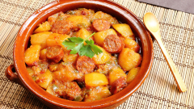

Rioja Style Potatoes <3

Directions
- Peel the potatoes and dice them in cubic chunks. In an olied pot, add the potatoes and fry softly for 3 minutes.
- Add the paprika and the salt and keep moving the potatoes to mix.
- Add water to cover and the chorizo in 2 inches slices.
- Add one or two bay leaves and let it boil for 30 minutes.
- Enjoy with some ball peppers!
Ingredients
- 3 generous potatoes.
- 1 chorizo sausage.
- Sweet paprika.
- Two teasppons of olive oil.
- Salt
- Bay leaves.
- Ball peppers.